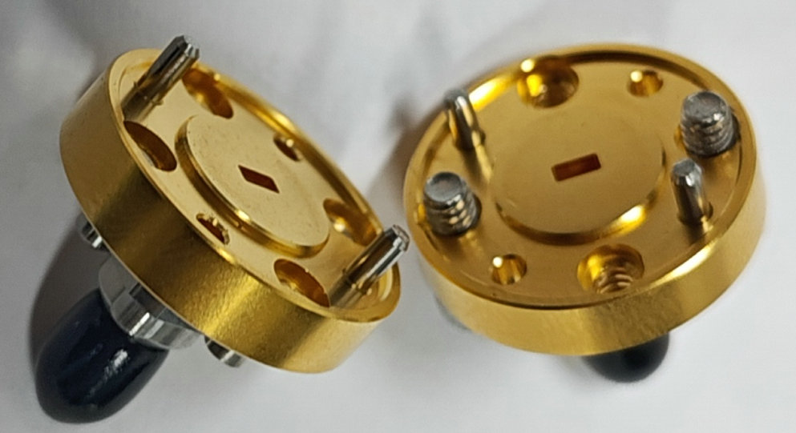
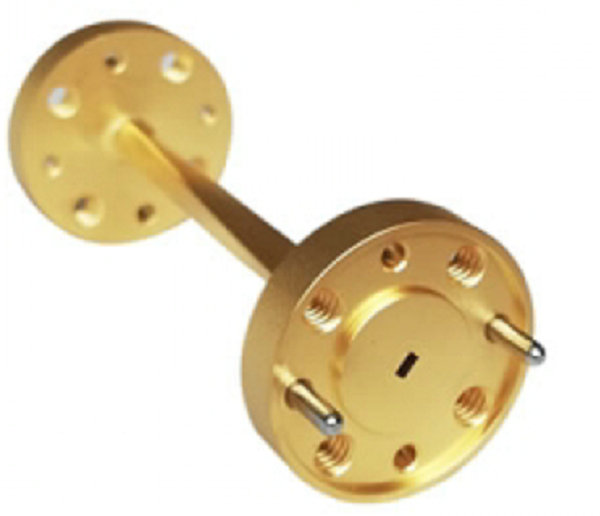
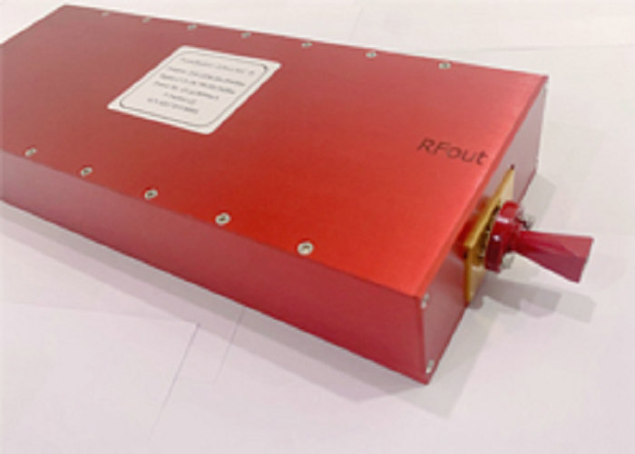
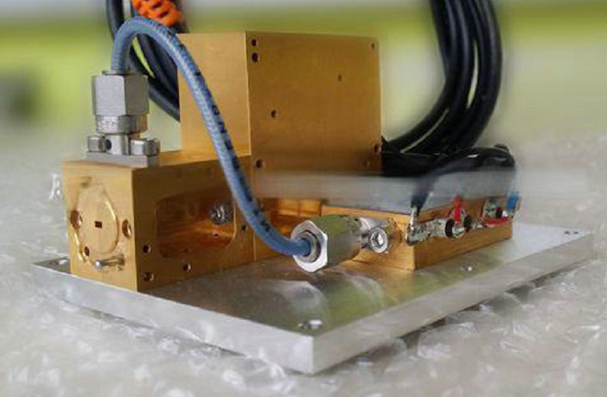
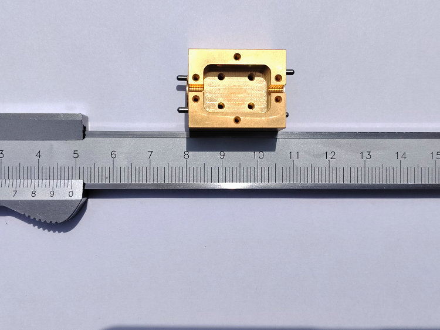
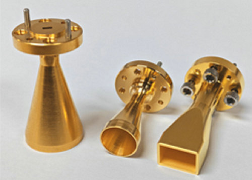

supplier of custom waveguides, precision terahertz processing, precision submillimeter micro assemblies! manufacture of sub-mm &THz processing (microwave cavities, mmwave housings, millimeter structural components)!
Our Excellence in Terahertz and Submillimeter Wave Precision Manufacturing


in the rapidly evolving field of terahertz technology, one size never fits all. Whether your application demands narrowband high-power Our Excellence in Terahertz and Submillimeter Wave Precision Manufacturing
Our capabilities span the entire production chain. Using advanced multi‑axis milling, micro‑EDM, and ultra‑precision turning, we craft custom waveguides for bands from W‑band (75–110 GHz) up to 1.5 THz and beyond. For submillimeter wave applications, we produce waveguide flanges with alignment dowels, complex E‑plane and H‑plane bends, and thin‑wall structural components that reduce weight without sacrificing rigidity. Precision producing cavities with mirror‑like finishes ensures low insertion loss and high power handling.
Operating at the frontiers of terahertz and submillimeter wave frequencies demands not only innovative design but also unparalleled manufacturing precision. At our facility, we have mastered the art of precision processing for custom waveguides, cavities, parts, housings, and structural components that perform flawlessly in the most demanding millimeter‑wave and submillimeter‑wave systems.


The terahertz gap—frequencies between 100 GHz and 10 THz—presents extreme challenges: wavelengths become tiny, tolerances shrink to micrometers, and surface finish directly dictates signal integrity. Our response is a comprehensive precision manufacturing ecosystem. We excel at precision producing intricate waveguide runs, resonant cavities, and compact housings that guide submillimeter wave energy with minimal loss. Whether the application is high‑resolution imaging, next‑generation communications, or spectroscopic sensing, our components deliver consistent, repeatable performance.
if your project involves millimeter waveguides, submillimeter wave components, or full terahertz assemblies, trust our team. We bring decades of experience in precision processing, precision micro assemblies, and precision waveguide micro‑assembly to turn your most challenging designs into physical reality.


What sets us apart is our command of precision waveguide micro‑assembly. Assembling terahertz‑grade waveguides is not merely stacking parts—it is a meticulous process of aligning, bonding, and verifying micro‑scale features. Our precision micro assemblies integrate custom waveguides, feed‑throughs, and transitions into complete sub‑systems. We routinely produce multi‑layer waveguide blocks, split‑block housings with integrated tuning elements, and structural components that maintain alignment under thermal and mechanical stress. Every cavity and every mating surface is machined and assembled to tolerances that others consider impossible.
We also understand that terahertz systems often require hybrid integration: combining machined waveguides with diodes, MEMS, or photonic chips. Our precision micro assemblies bridge these worlds, providing accurate registration and reliable electrical contact. From prototype to low‑volume production, we maintain strict metrology—using coordinate measuring machines and optical profilers—to guarantee every part meets specification.
broadband terahertz and narrowband terahertz sources
| Parameter | Broadband THz Source | Narrowband THz Source | |||||||
|---|---|---|---|---|---|---|---|---|---|
| Typical Frequency Range | 0.1 – 4 THz or 0.1 – 10 THz [12†L19-L20][22†L8-L10] | 1 – 20 THz (continuous tuning) [9†L4-L5][21†L16-L17] | |||||||
| Bandwidth | Spectral Bandwidth | Bandwidth / Linewidth | |||||||
| Representative Value | Up to 24.7 GHz [7†L22-L23] | <100 GHz (pulse bandwidth) [9†L8][10†L8] 56.5 MHz (CW linewidth) [8†L13-L14] | |||||||
| Power Output | Pulsed: Up to 4 mW (0.1-4 THz) [12†L18-L19], CW: 1.1 mW at 260 GHz [7†L21-L22] | Pulsed: 1-10 μW (avg.) / 10-100 nJ (pulse) [9†L8][21†L27] CW: 2.79 nW at 2.568 THz [8†L12-L13] | |||||||
| Dynamic Range / SNR | SNR: up to 1500 [11†L10], Dynamic Range: 65 dB [11†L11] | SNR: 40.5 dB at 4.315 THz [14†L13] | |||||||
| Spectral Resolution | 10 GHz (practical) [11†L11] | High (linewidth from MHz down to Hz) | |||||||
| Generation Method | Photoconductive Antenna (PCA) [12†L8-L9] | Difference Frequency Generation (DFG) [8†L10-L11][9†L7] | |||||||
| Operation Mode | Pulsed [12†L28-L29] | Continuous-Wave (CW) or Pulsed [8†L9][9†L4] | |||||||
| Typical Application | Spectroscopy, Material Identification [11†L12-L14] | High-Precision Spectroscopy, Gas Detection [8†L19-L21] | |||||||